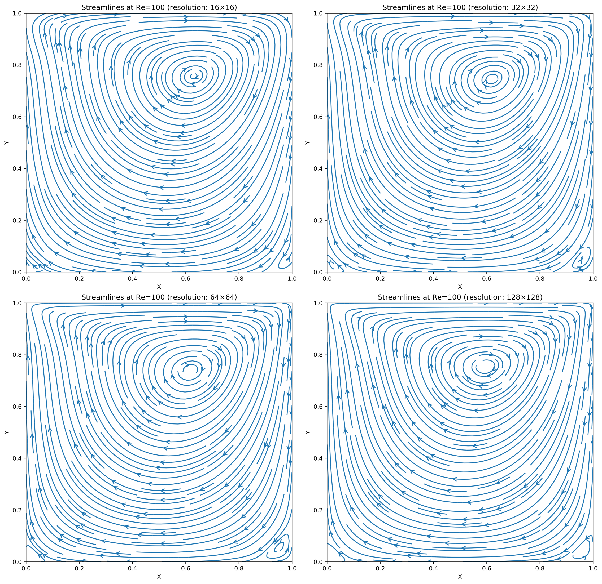
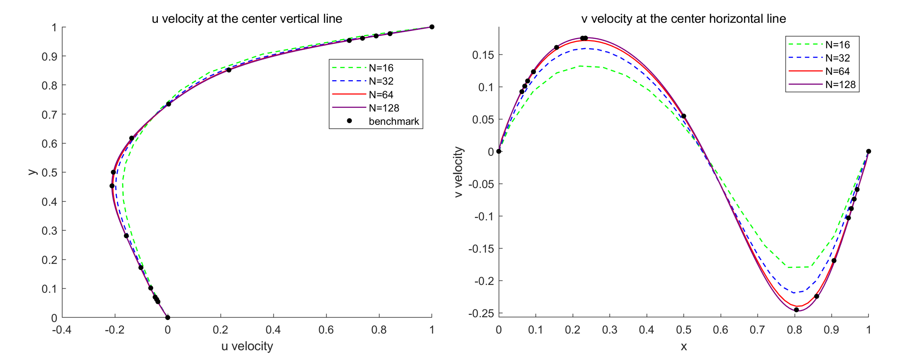
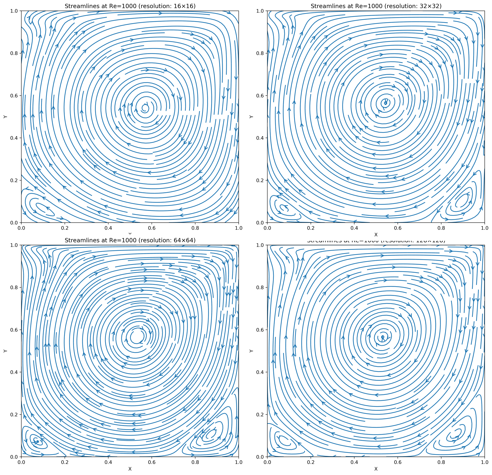
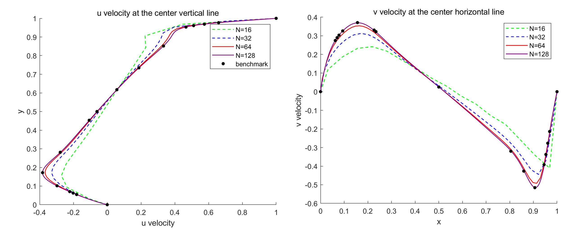

Lid-Driven Cavity Flow - 2D Finite Difference Method
Course: Computational Fluid Dynamics
Instructor: Rajat Mittal
View PDF of Final Report (MATLAB Code Included)
This project develops a two-dimensional Navier-Stokes solver for the lid-driven cavity flow, employing the finite difference method on a semi-staggered mesh. Spatial derivatives are approximated with a central difference scheme of second order, while time advancement follows a fractional-step procedure with Adams-Bashforth (AB2) for convection and Crank–Nicolson (CN2) for viscous terms. To resolve pressure and velocity accurately, face-centered velocities are updated separately to reduce divergence, ensuring that the velocity field remains divergence-free at each time step. A ghost point method is used to apply boundary conditions, simplifying the treatment of the moving lid and stationary walls. Additionally, a line Successive Over-Relaxation (SOR) approach is employed to solve the matrix equations efficiently.


The results successfully capture the primary and secondary vortices observed in standard references, and the centerline velocity plots show an accurate depiction of the flow behavior. Upon refining the grid from 16×16 to 128×128, additional flow structures become evident, highlighting the solver’s ability to capture detailed dynamics. The centerline velocity comparisons demonstrate high accuracy, matching closely with benchmark data. This consistency across various Reynolds numbers confirms the correctness and stability of the approach employed in this study.

